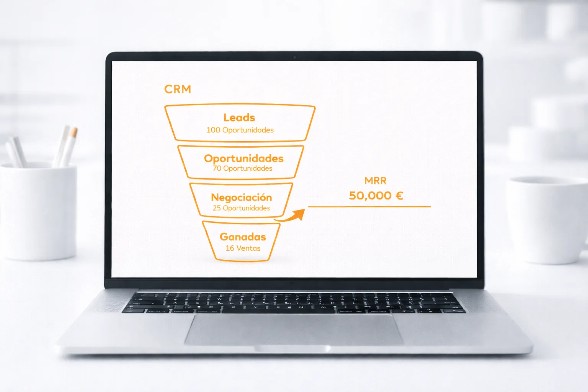
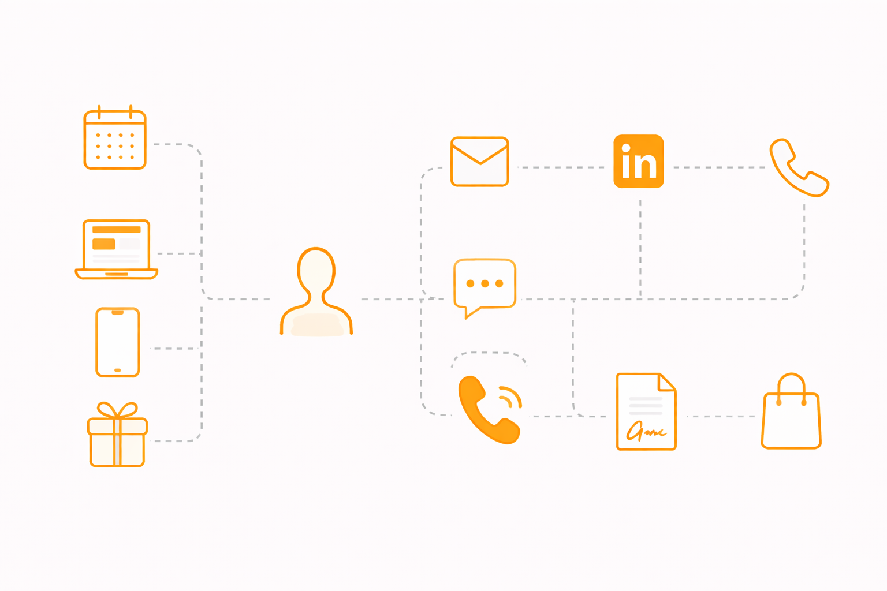

con mejor tecnología.
Diseño e implemento el sistema comercial que tu empresa necesita: desde la captación hasta el cierre, con resultados medibles.
Agenda una llamada gratuitaCada empresa tiene un reto comercial distinto.
Mi trabajo se centrará en las áreas que más impacto generan en tu crecimiento.

Muchas empresas dependen del boca a boca o de esfuerzos comerciales poco predecibles para conseguir nuevos clientes. En este servicio diseño el sistema que te permite generar oportunidades comerciales de forma constante y sostenible. Analizo tu mercado, te ayudo a definir tu cliente ideal y construyo un sistema que combina outbound, inbound y automatización de procesos para alimentar tu embudo de ventas con nuevas oportunidades de forma sistemática.

Sin un proceso comercial documentado, cada vendedor improvisa a su manera y los resultados son impredecibles. Trabajo contigo para construir el manual de ventas que necesitas: desde la primera toma de contacto con tu cliente potencial hasta el cierre del contrato. Definiré metodologías, secuencias de ventas, guiones de llamadas, criterios de cualificación, etapas del ciclo de ventas y las mejores prácticas para gestionar objeciones. Un manual completo que tu equipo puede replicar, escalar y mejorar con el tiempo.
A veces no necesitas un proyecto grande para llegar más lejos. Tal vez sólo necesitas una perspectiva experta en el momento adecuado. Si tienes una duda concreta, un problema que no sabes cómo resolver o un objetivo de ventas B2B que quieres alcanzar, estas sesiones están diseñadas para ti. En 1 hora por videollamada, vamos directamente al grano: analizamos tu situación, identificamos el bloqueo y definimos los pasos a seguir. Cada sesión es 100% personalizada y orientada a la acción.
Cuando construyes una empresa, saber vender es una habilidad clave. Muchos emprendedores tienen un buen producto, pero no siempre saben cómo encontrar clientes, explicar su propuesta de valor o estructurar un proceso comercial que les permita crecer. En estas formaciones trabajo con emprendedores, fundadores y equipos para desarrollar estas habilidades con un enfoque práctico y aplicado a situaciones reales de negocio. También facilito este servicio en colaboración con escuelas de negocios y organizaciones que apoyan el emprendimiento, como Startups Institute o CEIN.
Cada empresa es un mundo, y hay situaciones que requieren algo más que un servicio estándar. Si estás lanzando un nuevo producto, explorando un nuevo mercado, necesitas reforzar a tu equipo comercial o simplemente quieres acelerar tus ventas, trabajaremos juntos en el formato que mejor se adapte a tu caso. Definiremos objetivos, alcance y metodología de forma conjunta, con el nivel de implicación y seguimiento que tu proyecto necesita.
Un proceso estructurado para garantizar impacto real en tu negocio.
Cuéntame tu reto y vemos juntos cómo puedo ayudarte. Primera llamada sin coste ni compromiso.
¡Hablemos!